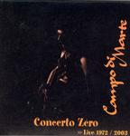

| Artist: | Campo Di Marte |
| Title: | Concerto Zero |
| Label: | Btf.it |
| Length(s): | 32+42 minutes |
| Year(s) of release: | 2003 |
| Month of review: | [02/2005] |
| 1) | Prologo Parte 2 | 7.55 |
| 2) | Alba | 12.31 |
| 3) | Epilogo | 5.42 |
| 4) | Prologo Parte 1 | 5.27 |
Disc 2 - Live 2003:
| 1) | Primo Tempo/Settimo Tempo | 10.02 |
| 2) | Back In Time | 3.26 |
| 3) | Bluesy Rocky | 6.07 |
| 4) | Italian Irish | 5.02 |
| 5) | Secondo Tempo | 4.06 |
| 6) | Terzo Tempo/Quarto Tempo | 8.13 |
| 7) | Rock Barock | 2.44 |
| 8) | Outro July The 12th 2003 | 3.51 |
Recently the band got together again. Besides Rosa, the only other old member present is drummer Sarti. The line-up also features Rosa's wife Eva and musicians he has met in various places such as the Estonian musician Sass.
Primo Tempo/Settimo Tempo opens the second dics, and yes the sound quality is much better here. It makes me confident I can hear all the necessary details. This first track is a riff based one in which guitar, drums and organ open forcefully. Then the music slows down and the guitar takes over fully, building the pace up again. The music is still old school symphonic rock, and the overall sound seems much darker. This has everything to do with the heavy guitar sound, which has something of the old Black Sabbath. The vocals are typically Italian though, although I would not be surprised to be find this on the Black Widow label instead. Vocally there are also echoes of Greg Lake, although he does not sing in Italian of course.
So we run into the jazzrock type guitar of Back In Time, with its sensitive keyboards in the back. This is introspection for you, and nicely melodic and sweet too, quite a contrast. Then the flute sets in for a bit more sweetness. The music becomes a bit more up-beat later on, and more folky too. I recognize elements of other folksongs, but all comes out rather warbled. Bluesy Rocky is a title that sounds none too promising. The guitar rears its head again here. The menace of the opener is back on this one, the guitar carrying quite a bit of bite. Some jazzy piano is thrown in, and indeed it turns out the song rather lives up to its name.
What do they make of Italian Irish then? The opening is acoustic guitar mainly, a bit plaintive in feel, later a flute sets in, followed by a piano. A bit too freewheeling.
Secondo Tempo hopefully brings us back to the prog. It does not do so really. Again we have the acoustic guitar strumming, with the flute and more melodic accompaniment. All a bit too sugary and laid back for my tastes. Terzo Tempo/Quarto Tempo is a bit longer and those bring back the prog in things. The guitars do sound a bit far away here, and its all guitar here. Pretty rowdy too. Then they are replaced by some nice melodic piano, playing a really nice theme. The guitar gets added back on making for a nice contrast. This song is much better, some of the orchestral bombast, drama and power that I tend to look for in Italian prog such as Banco. The flute adds another lyrical element. The vocals are okay, but nothing to write home about (like the vocalist of Banco for instance). But that's okay. The final part of the track is church organesque, reminding a bit of Focus.
Rock Barock is a rather short riff rock tune, with the melodic element having quite a bit of temperament. The guitar playing is rather fast here, and indeed has elements of baroque. Outro July The 12th 2003 is a private recording and introduces the band members, with a bit of instrumental progrock thrown in between.